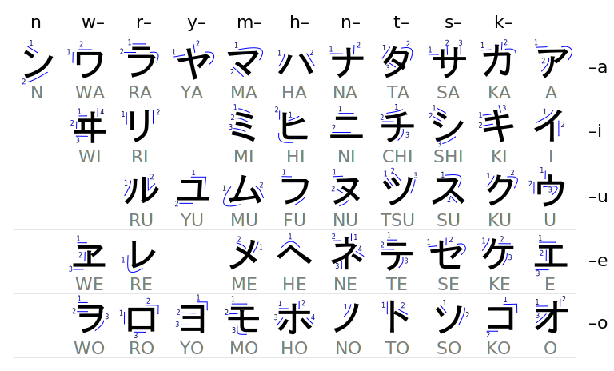

日本語 - Study material
Cheat sheet
Kana charts
ひらがな

Image source
カタカナ

Image source
Question words
- 何 (なに) - What
- 誰 (だれ) - Who
- 何れ (どれ) - Which one (if more than 2 options)
- 何方 (どちら) - Which way
- 何時 (いつ) - When
- 何処 (どこ) - Where
- 何で (なんで), 如何して (どうして), 何故 (なぜ) - Why
- 如何 (どう), どんなに - How
- 幾ら (いくら) - How much
Reference material
Online course material
Training apps